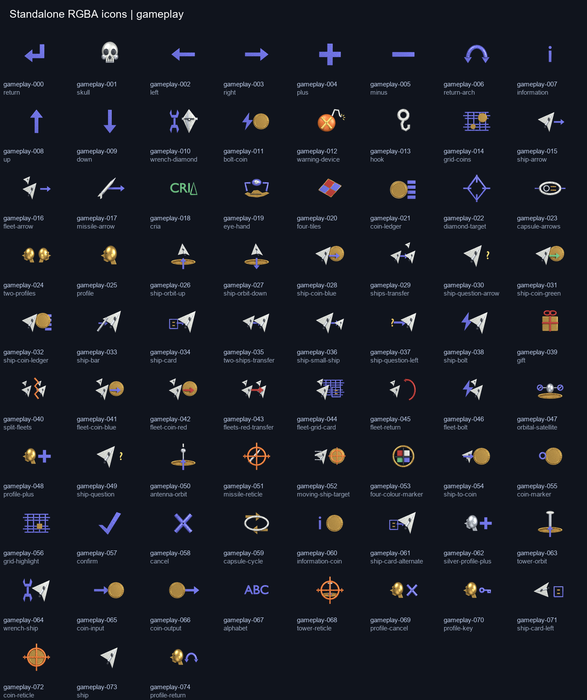
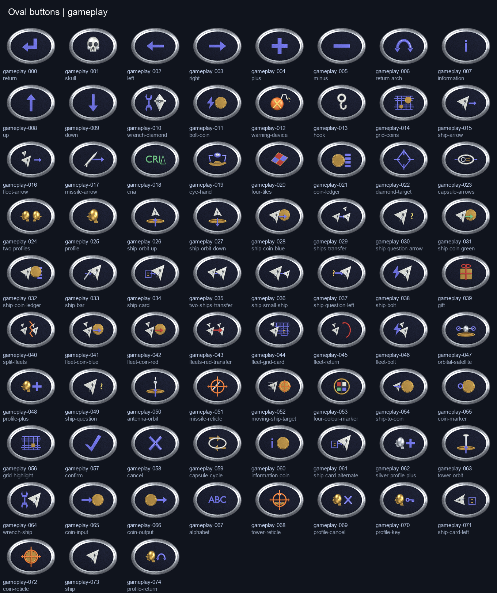
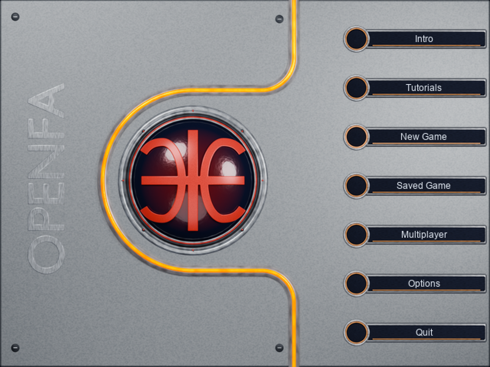
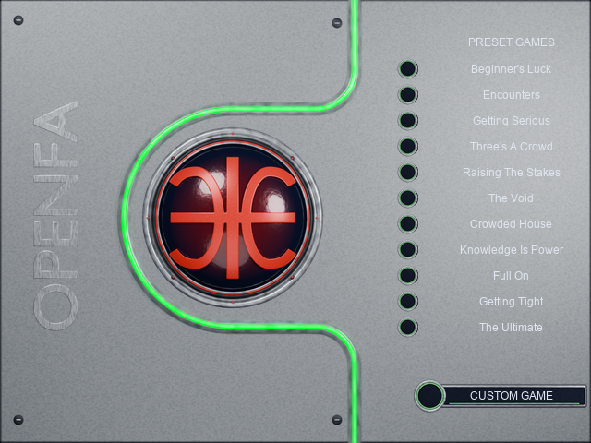
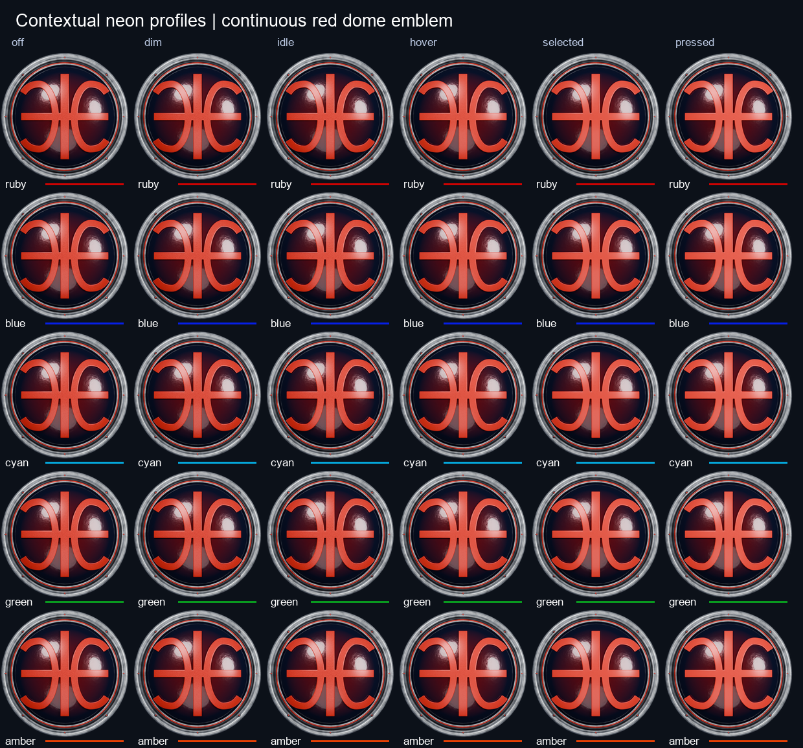

Complete HUD icons

111 records; standalone icons and oval buttons, five states at native and 8x resolution.
Source and contract
Oval HUD buttons

Legacy-referenced motifs with separate chrome and transparent icon delivery.
Source and contract
Main menu — amber neon

Current registered panels. Shared canvas, identical overlap pixels and continuous red emblem.
Source and contract · BLEND · GLB
Preset menu — green neon

Neon follows menu context; the sphere retains its red logo.
Source and contract · BLEND · GLB
Menu lighting states

Six interaction states. Additional lighting variants are OpenFA extensions.
Source and contract · BLEND · GLB
Interactive sphere — front
Full sphere, centered rotor and stationary bezel. Models only; click handling remains to integrate.
Source and contract · BLEND · GLB
Interactive sphere — rear
Mirrored continuous logo on the reverse. Both emblems are closed manifold meshes.
Source and contract · BLEND · GLB
Interactive sphere — illuminated spin
Blender animation demonstration. Client drives random-axis rotation and the independent emission pulse.
Source and contract · BLEND · GLB
Independent GLB import
Actual imported-model render. Export uses explicit PBR approximations of editable Blender materials.
Source and contract · BLEND · GLB